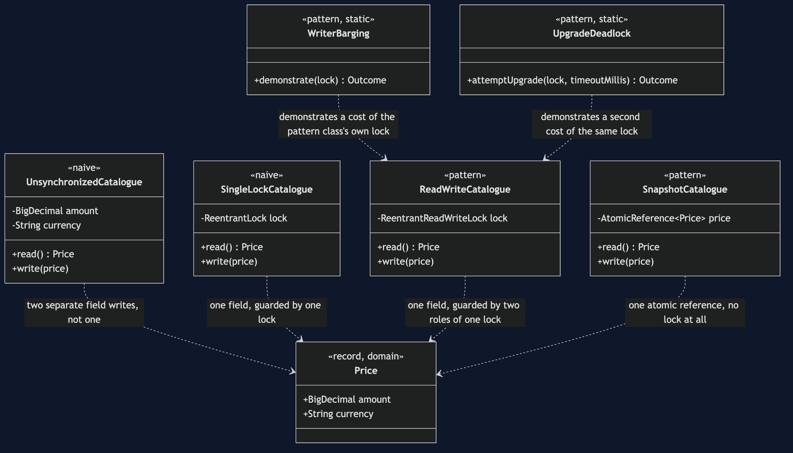
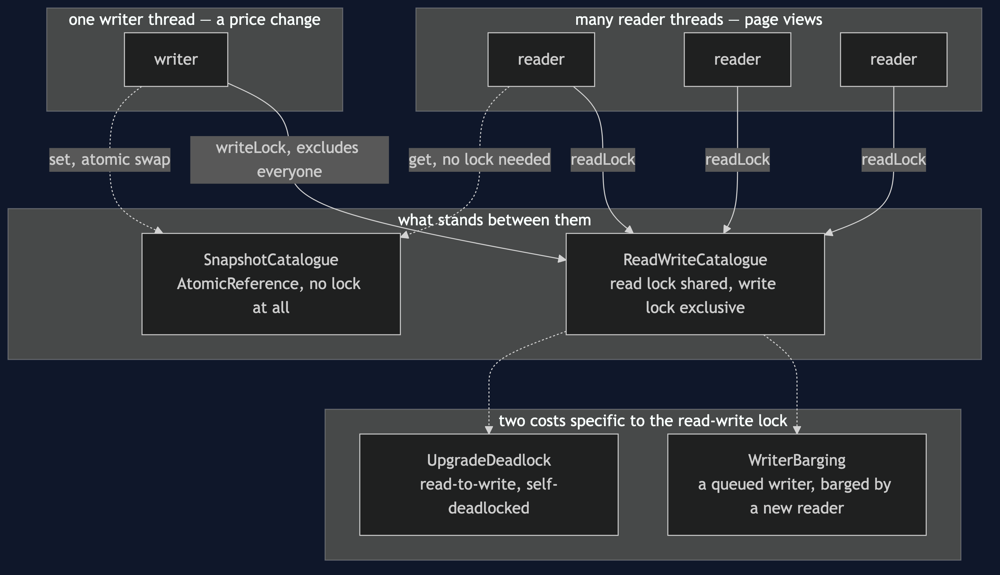
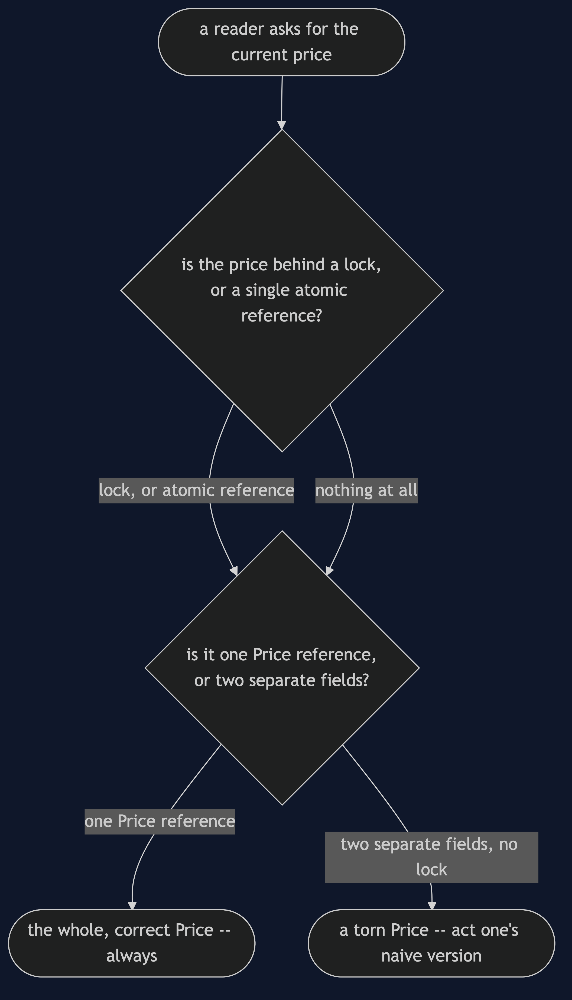
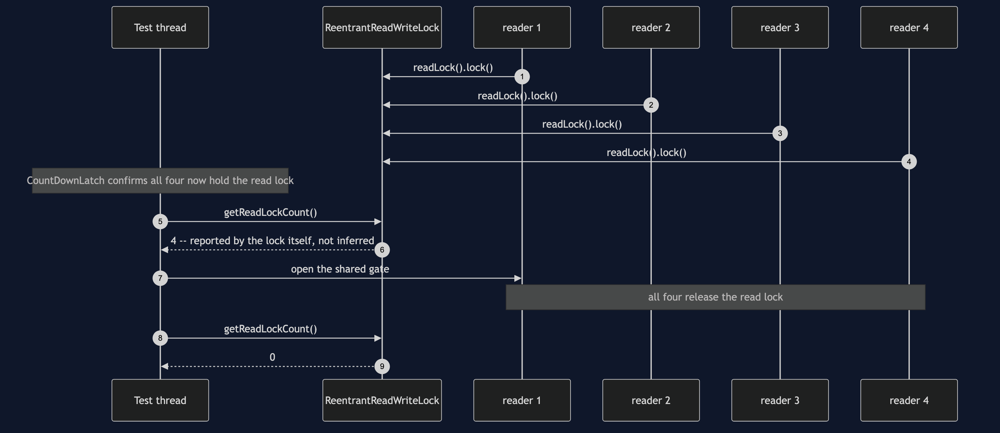
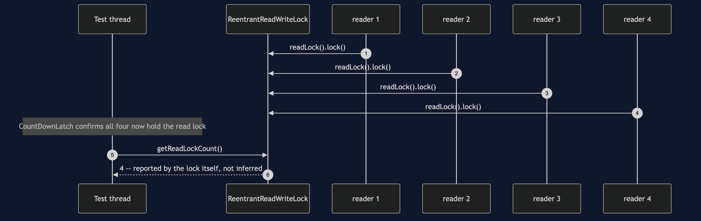
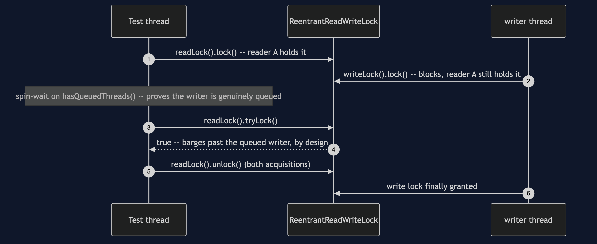
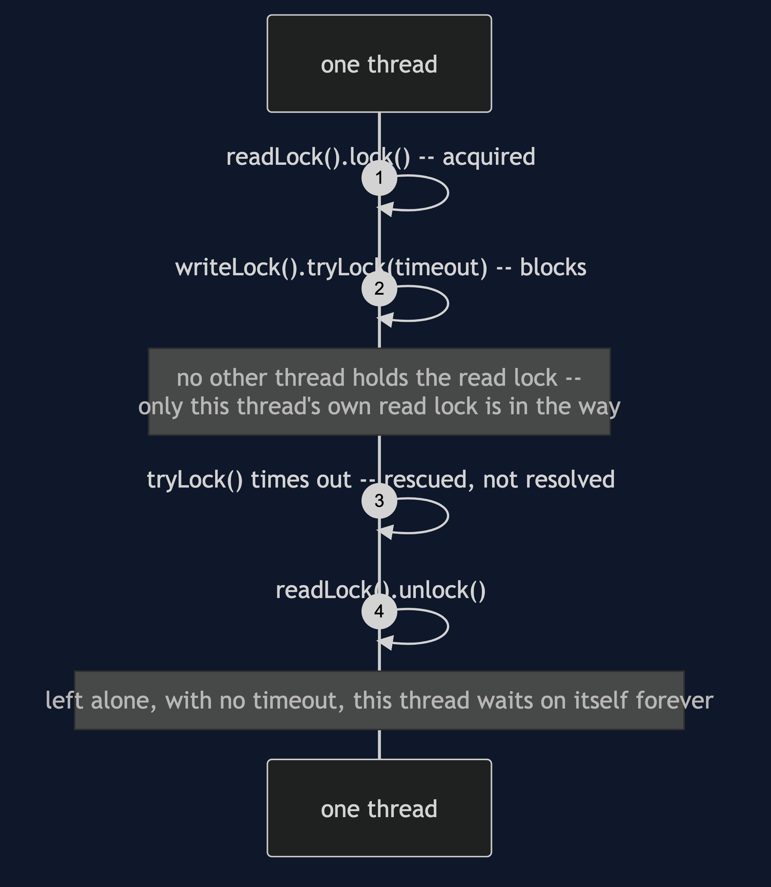

Read–Write Lock Pattern
src/main/java/com/jk/explore/readwritelock/
├── CatalogueDemo.java composition root — the six acts
│
├── domain/
│ └── Price.java record(amount, currency) — two fields, so it can tear
├── harness/ ← reused unchanged from §46
│ ├── Gate.java
│ ├── Rendezvous.java
│ └── StepExecutor.java
├── naive/
│ ├── UnsynchronizedCatalogue.java no lock — the torn read
│ └── SingleLockCatalogue.java one mutex — correct, readers queue
│
└── pattern/ ← the real thing
├── ReadWriteCatalogue.java shared read lock, exclusive write lock
├── WriterBarging.java a queued writer, overtaken
├── UpgradeDeadlock.java read lock to write lock waits on itself
└── SnapshotCatalogue.java the honest alternative: no lock at allMany readers may hold the lock together, but a writer holds it alone, because two reads can never conflict with each other and only a write can conflict with anything.
This is the fourth project in concurrency-design-patterns, reusing Producer–Consumer's harness directly. The first three projects move work around; this one protects the shared data that work reads from: a product's price, read by a thousand shoppers and changed now and then by a merchandiser.
Run
./gradlew runSix acts. The timings in acts two, three and six are real measurements and change from run to run and machine to machine; the ordering between them, and every other line, is what the tests pin.
Act one is a price read with no lock at all.
ONE. No lock at all — the torn read.
read mid-update: 54.99 GBP
never a true price: the new amount with the old currency.Act two is one plain lock around everything: correct, but readers queue.
TWO. One mutual-exclusion lock — correct, but readers queue too.
8 readers x 50,000 reads each: 15ms
every reader queued behind every other reader -- two readers
can never conflict, and this lock cannot tell them apart.Act three is the pattern, and a surprise.
THREE. The pattern — many readers together, a writer alone.
8 readers x 50,000 reads each: 138ms
no reader ever waited on another reader -- and for a read this
cheap, that freedom costs more than it saves. See act six.Act four shows a queued writer being overtaken.
FOUR. The mechanism behind writer starvation.
writer genuinely queued, waiting: true
a second reader's tryLock() barged past it anyway: true
documented behaviour, not a fluke -- do this continuously and a
writer can wait far longer than its own work would ever justify.Act five shows why a read lock can never be upgraded.
FIVE. Upgrading a read lock to a write lock deadlocks.
same thread, holding the read lock, requests the write lock:
deadlocked: true, rescued after 203ms by a demonstration timeout
left alone, this thread waits on itself forever.Act six puts the lock next to its rivals.
SIX. When the lock loses.
single mutex: 16ms
read-write lock: 137ms
immutable snapshot: 2ms
the lock advertised for readers is the slowest of the three --
managing 'many readers may proceed together' costs real
synchronization of its own. For a price this cheap to copy,
the snapshot needs no lock, and no readers to coordinate at all.Test
./gradlew testEight test classes, 10 test methods between them, eight run twenty times each via @RepeatedTest — 162 executions total, none of them using Thread.sleep to wait for another thread. The torn read is forced with a gate, the barging writer is proven to be genuinely queued before the second reader arrives, and the upgrade deadlock is rescued by a timeout the test owns.
Technologies and versions
| What | Version | Why it is here |
|---|---|---|
| Java | 21 | The repository standard, via the Gradle toolchain block |
| Gradle | 9.2.1 | The wrapper in this directory; no separate install needed |
| JUnit 5 | 5.10.2 | Test runner — @RepeatedTest is how this project proves a race, not merely exercises it |
No frameworks beyond JUnit. java.util.concurrent.locks and AtomicReference are this project's entire subject.
Learning Material
| Document | What it covers |
|---|---|
docs/problem-statement.md | The shared price, and what the pattern has to deliver |
docs/read-write-lock-pattern-explained.md | The pattern, and the three costs paid honestly |
docs/determinism.md | How each scenario is forced, and which numbers are only measured |
docs/class-diagram.md | The types, and which ones touch the lock directly |
docs/architecture-diagram.md | Readers, writer and lock, and where each waits |
docs/data-flow-diagram.md | One read and one write, through each of the catalogues |
docs/sequence-diagram.md | Who calls whom, in order — written for a listener with the screen off |
docs/uml-diagram.md | Four sequences, including the harness's own proof |
docs/animation.html | The six acts in a browser |
docs/prerequisites.md | What you need to know, including what §46 already covered |
docs/session.md | A one-hour taught session with exercises |
docs/spec.md | The generated specification, with measured test counts and timings |
docs/youtube.md | Title, description and chapters for the video |
The pattern in one picture

Where each piece runs

How one read and one write move

Who calls whom, in order

All four sequences
The full set from docs/uml-diagram.md.




Video
The narrated walkthrough is built from video/scenes.py by video/build_video.sh. The rendered file is not committed — see the repository README for why.
When this is too much
Worth it when there are many readers, few writers, and each read takes real time, such as scanning a large in-memory catalogue. Not worth it for a read as cheap as returning one price: this project's own act six shows a plain mutex and an immutable snapshot both beating the read-write lock.
Where this sits
This is the fourth of six projects in concurrency-design-patterns, reusing §46's harness directly.
The next project, Monitor Object, goes on from guarding shared state with a lock to the object that owns its lock and its waiting: the category's stock count, where "wait until there is stock" has to be written correctly.